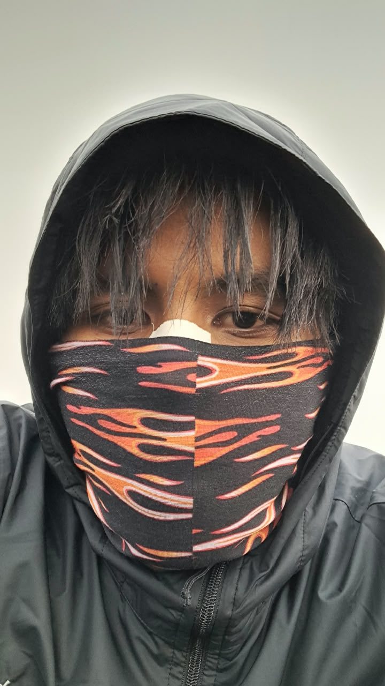

HALO, SAYA
Mahasiswa yang sedang mempelajari teknologi informasi, cybersecurity, dan artificial intelligence serta terus mengembangkan kemampuan di bidang teknologi.
Lihat Profil
Information Technology & Artificial Intelligence
Nama
Abe Nursodiqin Sholeh
NIM
2505090048
Program Studi
Pendidikan Teknik Informatika dan Komputer
Tahun Angkatan
2025
Saya adalah mahasiswa yang memiliki ketertarikan terhadap teknologi informasi. Saat ini saya sedang mempelajari berbagai dasar pemrograman, teknologi web, serta cybersecurity.
Saya tertarik mempelajari cybersecurity karena bidang ini berhubungan dengan bagaimana melindungi sistem, jaringan, aplikasi, dan data dari berbagai ancaman keamanan digital.
Selain cybersecurity, saya juga mulai mempelajari artificial intelligence untuk memahami perkembangan teknologi yang semakin banyak digunakan dalam berbagai bidang.
Saya aktif mengikuti berbagai pelatihan yang berkaitan dengan teknologi informasi untuk menambah pengetahuan dan meningkatkan keterampilan di luar pembelajaran perkuliahan.
Melalui pelatihan tersebut, saya dapat mempelajari materi secara lebih praktis serta mendapatkan pengalaman dalam menyelesaikan permasalahan yang berkaitan dengan bidang teknologi.
Saya mengikuti kegiatan kepanitiaan dan internship dari Codelines untuk mendapatkan pengalaman dalam bekerja sama, berkomunikasi, dan menyelesaikan tugas dalam sebuah tim.
Kegiatan tersebut menjadi kesempatan bagi saya untuk mengenal lingkungan kerja dan organisasi sekaligus mengembangkan kemampuan di bidang teknologi informasi, khususnya cybersecurity.
Cita-cita saya adalah menjadi ahli di bidang cybersecurity yang memiliki kemampuan untuk memahami, menganalisis, dan menangani berbagai permasalahan keamanan digital.
Untuk mencapai tujuan tersebut, saya ingin terus mempelajari keamanan jaringan, keamanan aplikasi, penetration testing, threat hunting, digital forensics, serta berbagai teknologi keamanan lainnya.
Saya juga ingin mendapatkan pengalaman melalui pelatihan, proyek, kompetisi, dan kegiatan yang berhubungan dengan cybersecurity agar kemampuan yang saya miliki dapat berkembang secara bertahap.
Bidang IT yang ingin saya dalami adalah Cybersecurity.
Saya tertarik dengan cybersecurity karena perkembangan teknologi digital juga diikuti dengan semakin beragamnya ancaman terhadap sistem dan data.
Saya ingin memahami bagaimana sebuah sistem dapat diamankan, bagaimana serangan dapat dideteksi, serta bagaimana melakukan analisis ketika terjadi sebuah insiden keamanan.
Mempelajari cara melindungi jaringan dari akses tidak sah dan berbagai ancaman keamanan.
Mempelajari keamanan aplikasi web serta berbagai kerentanan yang dapat dimanfaatkan oleh penyerang.
Mempelajari proses mencari dan menganalisis aktivitas mencurigakan yang dapat menjadi indikasi adanya ancaman keamanan.
Mempelajari proses pemeriksaan bukti digital untuk membantu memahami kejadian atau insiden keamanan.
Saya ingin menguasai cybersecurity secara bertahap, mulai dari memahami dasar jaringan dan sistem operasi, keamanan web, analisis log, threat hunting, hingga penetration testing dan digital forensics.
Saya juga ingin terus mengikuti perkembangan teknologi keamanan agar dapat meningkatkan kemampuan dan menjadi seorang profesional cybersecurity yang kompeten.